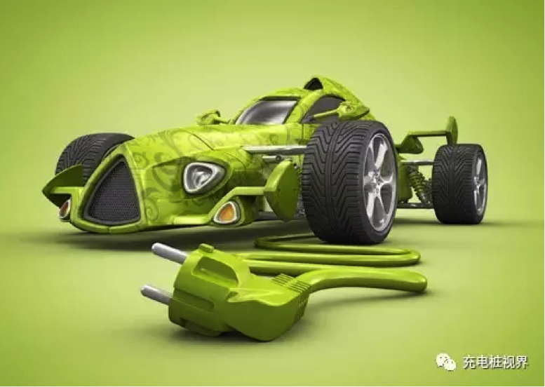
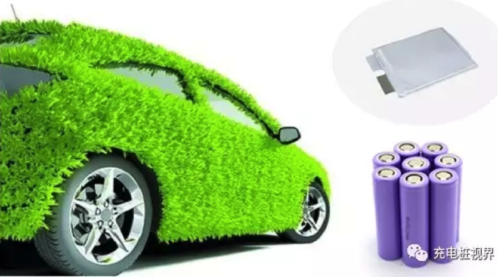
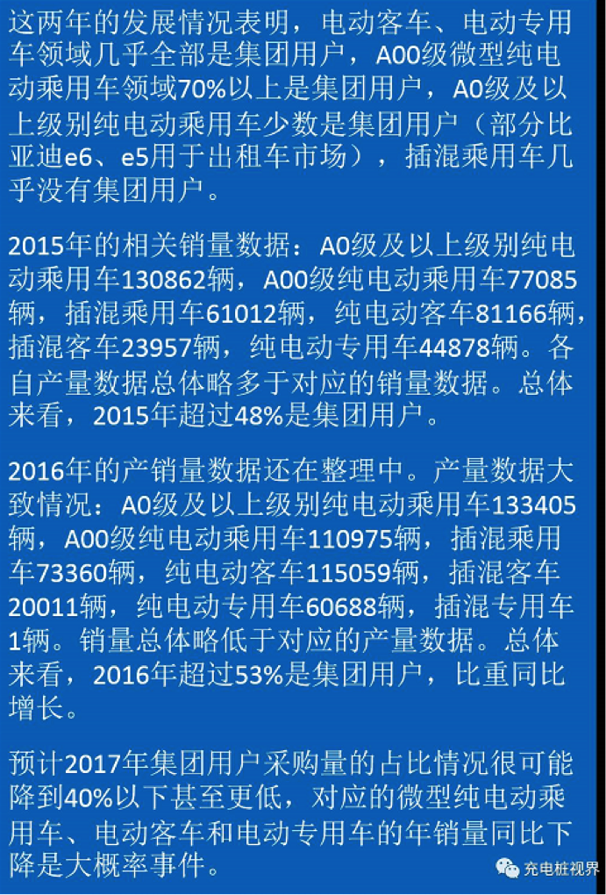
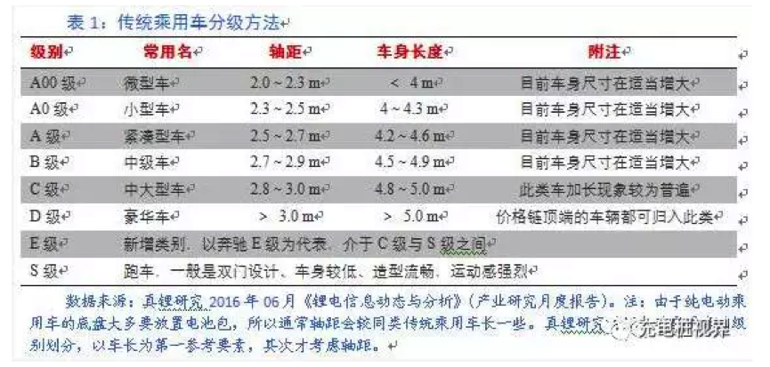
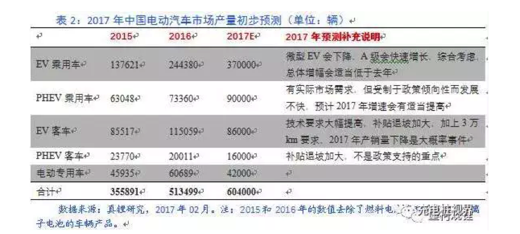
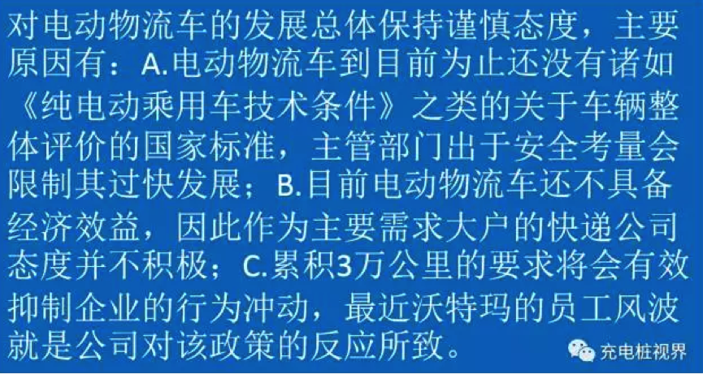
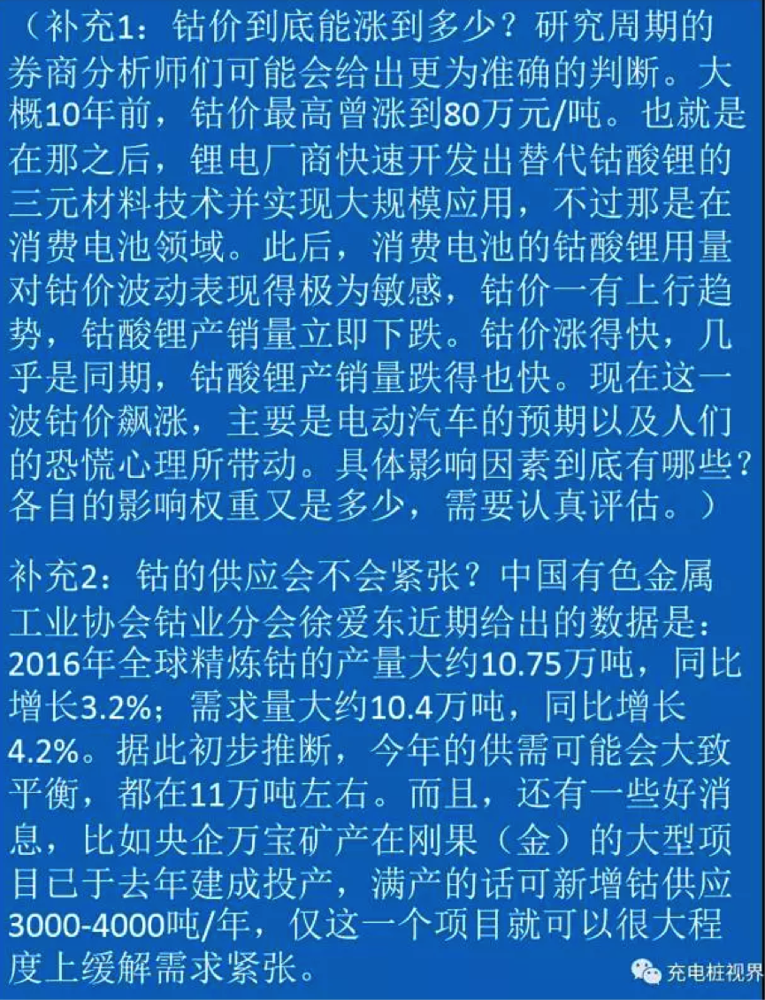

只有掌握核心技术，才能在新经济常态下的市场竞争中赢得市场。而这，也是“十三五”期间新能源汽车产业的题中之义。来到2017年，曾无限风光的新能源汽车在1月份便遭遇了“最强寒流”。根据乘联会公布的数据显示，今年1月份新能源汽车销量仅为5423辆，同比下降61%，环比下降了87%。后补贴时代如何走出政策“襁褓”，巧用市场之手撬动产业活力，成了“十三五”时期新能源汽车的首要发展命题。
补贴“襁褓”剥离，直至四年内完全取消补贴，我国新能源汽车从生产端到需求端的变化，会不会导致行业格局的剧变？
由于补贴标准下降较大，车企要求电池厂依照退坡幅度降价20%左右，二者的利润分配要重新进行，需要博弈，初期车企应该是强势一方，所以电池厂的积极性会受到一定程度影响。
下面是前一段时间和一些企业及投资机构交流时真锂研究关于今年新能源汽车发展的一些看法，现简单整理，与大家共享。看法不一定对，仅供参考，请批评指正。
（补充：今年的动力电池价格有较大可能先抑后扬，最终可能会比去年还略有上涨。虽然在车企的压力下，目前一些电池厂已经降价10-15%，但在资源和材料价格不断上涨的实际情况下，电池芯在累积价格上涨势能并终将摆脱车企的压力。在电池芯成本刚性以及下游车企压力的联合作用下，模组厂商、BMS厂商今年的日子可能会比较难过。）
针对非个人用户（即集团用户）的3万公里累积行驶里程要求，意味着这部分采购补贴获取的时间会比个人用户领域晚一年以上。（以100公里/天计算，如果车辆被年租且一年有300天在路上跑，3万公里需要一年时间。如果车辆没有满租出去，或满租了但只是断断续续在路上跑，需要的时间就会更长）
 （补充：前两年集团用户占比过大，是真锂研究认为今年新能源汽车很难继续保持高速发展的主要理由。如果政府采取一些诸如将传统出租车强制更换为电动出租车的措施，那么，中汽协预计的今年80万辆才有可能实现，否则很难。这里40%的预计是基于真锂研究预测的60-65万辆，我们认为，今年集团用户的采购量很难超过24万辆。）
企业说的细则方面主要指的应该是对安全方面的技术要求。2017年开始实施的新能源汽车产品专项检验标准目录，关于电池部分（含单体、模块、电池包）的6个专项检测标准中，2个是新增的，另外4个都进行了更新。这6个标准分别是：针对电池单体和模块的GB/T 18333.2-2015、QC/T 741-2014、GB/T 31484-2015、GB/T 31485-2015、GB/T 31486-2015、针对电池包的GB/T 31467.3-2015。
三元电池在技术层面很难达到，磷酸铁锂同样如此。但我们之前已经提到过，在人治的实际情况下，办法总比困难多。目前有越来越多的企业宣称其磷酸铁锂电池系统能量密度能够达到115Wh/kg，那么，三元电池同样也应该能找到相应的办法。总体来看，墨柯认为，今年的纯电动客车上，三元电池的应用比例应该会大幅度提升。
从纯电动乘用车三元电池的替代速度以及其他相关因素综合来看，预计今年三元电池在纯电动客车上的用量占比可能超过20%，明年可能会超过40%，后年则有可能超过70%。磷酸铁锂电池逐步退出电动汽车市场已是基本确定的发展趋势。
（补充：近期钴价的暴涨可能会在一定程度上减缓三元电池替代磷酸铁锂电池的速度，但这种影响到底有多大，目前还不大好判断。）
相关预测见表2：
在燃料与积分办法的压力下，今年合资车企很可能加大电动乘用车产品的开发力度，考虑到这个因素，2017年EV乘用车的发展速度有可能会比表中预测要快一些，我们对该类车的上限预测数值是40万辆。基于此，真锂研究对今年新能源汽车的销量初步预测是60.4-63.4万辆之间。
关于电动专用车2017年的销量预测，真锂研究去年8月时做出了3.65万辆的预测。在没有看到多少积极信号的情况下，真锂研究认为今年销量肯定将会下降，目前暂时预测会是去年的70%左右。
（补充：三令五申要求建立网络监管平台以及对集团用户骗补的高压，将会有效抑制今年新能源汽车的野蛮成长。资本市场有妖精，新能源汽车领域同样有。证监会和保监会在打击资本市场的妖精，工信部应该同样也会打击新能源汽车领域的妖精。监管趋严已成既定事实，基于这点判断，今年的产销数量不会太乐观。从长期看，现在打好基础，对将来新能源汽车的发展是有利的。）
不同正极材料的金属需求情况见表3。正极材料企业在具体生产时会存在一定的浪费，据咨询企业人士，他们说可以大致按5-6%计算。不过，正极材料企业的成品率可能也是一个问题，不合格产品中的资源回收情况如何，电池生产对于正极材料的利用率如何，等等，这些问题真锂研究目前正在想办法了解清楚。

中国有色金属工业协会锂业分会2015年对40家正极材料企业的统计结果是：共生产各类正极材料合计16.7万吨，同时，海关统计数据显示，当年中国出口钴酸锂0.81万吨，出口三元材料0.44万吨。结合来看，有15.45万吨供应国内市场，包含少量库存。然而，根据下游电池需求量情况推算电池厂商对正极材料的需求量，理论上不到10万吨，差距较大。原因可能与正极材料和电池的成品率以及下游应用厂商的电池浪费率有关。具体情况有待进一步调查。
正极材料的发展趋势肯定是高镍化。从过往发展情况看，任何一种新型正极材料的大规模应用，即便从投放市场之日开始算起，最快也要两三年时间。这样，从NCM523到NCM811，正常来看，2020年是很难做到的，但是，政府规划表达出的大跃进思维却要求达到这一点。这样，有可能出现“欲速则不达”的结果。因此，关于进度的分析，还需要多方面因素综合考虑，目前暂时没办法答复。
按理说钴价不至于如此飙涨，但实际情况较为复杂：①由于总的供应量不大，供需差距太小，一旦有职业炒家囤货，供应就会马上紧张；②钴的供应主要来自刚果（金），由于刚果执政党不断找理由拖延选举，反对派正在失去耐心，一旦刚果爆发内战，钴就可能断供；③钴的供应是垄断格局，几个巨头垄断供给，和锂的情况差不多（2015年锂的供需基本平衡，但是碳酸锂价格短短几个月内飙涨了4倍）；④货币实际在快速贬值；等等。这些因素交织在一起，导致很难判断。对于这方面的情况，真锂研究乐意与行业朋友一同交流，互通有无，共同研究。